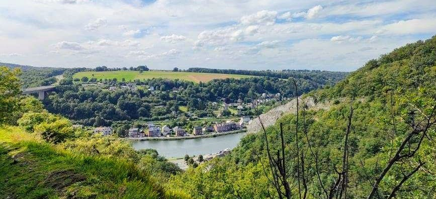

What a trip! Bill and I flew out with his brother from the Netherlands, while my mom and her husband came from Florida (by way of Ireland) to meet us in Lisbon. We checked into our stay on Rossio Square and initially killed some time at the Museo de Dinero and had our first (of many) Pastéis de Nata from a small cafe. With the whole group together, we walked the Rua de Prata and found ourselves a Tuk Tuk driver at the scenic waterfront Commerce Square. The tuk tuk tour was like a roller coaster ride of charging up and down the steep hills of Lisbon. We stopped by Lisbon Cathedral, the ruins of a Roman Theater, the Castle of Sao Jorge, and in the Alfama neighborhood we got some local gijinha (ginja berry liquer) in a chocolate cup from a little old lady's stall.
We saw remnants of the old city walls and stopped at viewpoints of the city. Afterwards, we wanted to go to the castle, but when we saw the line we opted instead to stop at a cafe on the hill for the bathroom and drinks. On the way back to our neighborhood we walked through the remaining stalls of the closing local market.
The next day we caught Tram 15 to Belém and met with our free walking tour group. The tour included the Monument to Alfonso d'Albuquerqe, Pasteis de Belem from the original site, Jeronimos Monastery and its Manuelline Architecture, and the Padrão dos Descobrimentos. We learned a brief history of this part of Portugal, that it had been ruled by the Phoenicians, the Romans, the Visigoths, the Moors and eventually reclaimed by the inhabitants, the Portuguese. The tour focused on the golden age of Portugal, the Age of Discovery, that dominated the late 1400s until 1580. Brief history: In 1488 Bartolomeu Dias rounded the Cape of Good Hope, and in 1498 Vasco da Gama reached India. In 1500, either by an accidental landfall or by the crown's secret design, Pedro Álvares Cabral reached what would be Brazil. By 1571 a string of naval outposts connected Lisbon to Nagasaki along the coasts of Africa, the Middle East, India, and South Asia. The death of King Sebastian I of Portugal in the Battle of Alcácer Quibir in 1578 and the following death of his successor and great-uncle Henry I in 1580, resulted in King Philip II of Spain (Philip I of Portugal) seizing the Portuguese crown. The union brought new enemies leading to a long and gradual decline of the Portuguese empire.
After the tour we had a late food truck lunch along the Tagus River and then relaxed at a mobile wine tasting vendor. We toured Tower of Belém, a 1519 defensive tower protecting the inlet to Lisbon. Returning to town, we stopped to eat at Sol e Pesca. This small restaurant, with hilariously tiny seats, makes canned seafood into tasty snacks that are great with drinks (we really liked the octopus). Its also on "pink street", a local nightlife area with a painted street.
Later, we tried Manteigaria Pastéis de Nata, and it was the best of the trip. On getting back to the room, we found the hotel had left cake and champagne for Bill's birthday so we all celebrated!
On a Sunday, we visited the recently opened Keukenhof Gardens near Amsterdam. This facility only opens a couple of months a year and has massive displays of hyacinths, crocus, daffodils and of course, tulips. We went early in the season so the outdoor fields weren't as impressive as they'll be in mid to late April, but the indoor exhibits were amazing and the whole site was really a fun trip.
I really enjoyed the "Adriaen" street organ, it is the same concept as a player piano, but with organ pipes and kick drums. The mechanics of how it works are visible from the back and the music it put out was good too!
The Adriaen in Action
I hope we get the chance to go again later in April some year, you can rent a bike and see the fields that way too. But even this time of year it was wortht the trip.
We went to Antwerp for a day trip, parking outside the city and riding the tram into downtown. We met up with our walking tour at Grote Markt. The Grote Markt has a beautiful old town hall surrounded by guild halls. In the middle of the square is a statue which explains the meaning of the name "Antwerpen" (as it is in Flemish) - meaning hand-throwing. The story is that a giant charged a bridge toll to cross the river Scheldt, and anyone who couldn't pay would have their hand cut off and thrown in the river. Silvius Brabo, the nephew of Julius Caesar, came and defeated the giant, cutting off the giant's hand and throwing it in the river. In honor of this story there are hand statues and souvenirs throughout town.
Another common statue we found was of the Madonna, Antwerp's patron saint. She was on many corners of buildings, usually under a little umbrella. Our guide also pointed out a statue of a boy peeing, which as he said is bigger than Brussels' Mannekin Pis, and in gold on top of a guild hall.
We learned that Antwerp's golden period was the 16th century when they were the center for trade and flourished in the arts. However, the Spanish rulers at the time's persecution of protestants drove many of the wealthy and talented north to Amsterdam and other places, which contributed to Amsterdam then flourishing in the 17th century. Meanwhile trade was closed in Antwerp and a thriving city that had been three times the size of London fell into decline. Of course the city does well today and benefited from the 1830 formation of Belgium.
Antwerp has five main cathedrals, we visited two. We stopped in to Saint Charles Borromeo Church, a 1600s baroque-style church. Whereas the inside of gothic churches draw the eyes up to the "heavens", the baroque style keeps the focus on the priest at the end of the hall. Impressively, the massive painting in the back switches three times a year using a hidden lowering and lifting mechanism. Later we visited St Paul's Church. This cathedral’s walls are decorated with works done by Antwerp painters Rubens and van Dyck. In the city center, there is the Cathedral of Our Lady, which started construction in 1352 and was never fully completed as it experienced a fire in 1533. As a result, though it was planned to have two towers of equal height, it now only has one giant tower and a second smaller one.
We went through the "medieval" section of Antwerp, which is just the old buildings and narrow streets that once filled all the blocks but have mostly been removed to make way for alleyways and vehicles and parking. It was very cool to see preserved and you could imagine how close everyone used to live.
We grabbed lunch at Takumi Ramen Kitchen, a local chain, and had some really good ramen. We got souvenir "hand cookies" from Philip's Biscuits on our way to the Plantin-Moretus Museum. This location was one of the most important early printing presses in the world. Cristophe Plantin founded the printing company in the 16th century, capitalizing on Gutenberg's invention and Antwerp's location to produce and spread printed, mostly religious, texts. This site at one point produced half the texts existing in Europe. After it was sold to the city in 1876, all the equipment remained and it became a museum. It was not only a place of work, but a home to Plantin, his son-in-law Jan Moretus, and other families who were well-connected Humanists of their time. The rooms were large and ornate and decorated with tapestries, portraits and Rubens paintings.
After the museum, we refreshed with a cupcake from Momade and then stopped in to Cafe Quinten Matsys, the oldest bar in Brussels. Dating from 1565, it is named after the prominent Antwerp painter. It had really good pub vibes, local taps and was a good rest. It was recommended to get a Bolleke, the local beer, which is a nickname for Konnick beer meaning "ball" after the shape of the glass. Instead we tried a Tripel d'Anvers which is made by the same brewery.
We walked down Mier, a large modern shopping street and stopped into a couple view-worthy shopping areas. Finally we ended at the Antwerp Central Station which was funded by the infamous King Leopold II's dirty congo money. Regardless of its origins, it is considered the most beautiful station in Europe. We missed going to the upstairs cafe that was built for the king, but were pretty tired and grabbed one last Liege waffle and headed home.
Next time it would be interesting to see the port area and the MAS museum and its rooftop viewpoint. Maybe see what the left bank is about and some other neighborhoods. I'd get the Tripel d'Anvers again (maybe even do the brewery tour) and Bill will probably want more of those hand cookies.
We made a stop in to Trier on the Mosel River in Germany on our way to visit Ramstein Air Base. Trier is the largest town in the region and hosts a university but is best known for its Roman history. It was once one of the largest urban centers in the Roman Empire. We visited Porta Negra in the heart of downtown, an imposing defensive Roman gate. We were surprised to find even the garage we parked in had subterrenean ruins of a Roman bath. The vineyards and wine-making that the Mosel region is famous for also goes back to Roman times. They would press grapes at the vineyards and load the must onto river boats to be stored at the large wine cellars of the Imperial Residence in Trier. I'd like to come back and tour more of the Roman history and to try some local wine.
This area is also near some great hiking we visited before in the Mullerthal region of Luxembourg. We found a hike in the same geologic formations but on the German side, that started at a Dinosaur Park. It was a good hike, not as impressive as what we saw on the Luxembourg side, but very enjoyable. Plus, dinosaurs.
After a frustrating series of flight experiences out and back to Seattle for Christmas, and with work picking up pace on our return, Bill and I were more than happy to stay at home. After some winter hibernation, we finally journeyed out again, this time taking the train to visit Brussels for a long weekend. We stayed at the Ibis Hotel, a small place near the station and in the heart of the city with a square out front. We stopped into the Illusion Museum. There were a lot of interactive exhibits and photo ops. It was light and fun.
Naturally, food was a big focus of the trip, and we tried frites, chocolate and for dinner mussels, meatballs and Belgian beer. That night, we explored the Bright Brussels exhibits, a lighting and music display that takes place in the winter every year. It was a really cool experience and a unique way to see the city sights.
The next day, we joined a free walking tour starting at Grand Place. One of the first things we learned was that the French and Flemish (Dutch) names for streets and places don't really match up, for example Grand Place is known as Grote Markt in Dutch. Our guide was super knowledgeable about history and had multiple stories to tell. Grand Place itself has this amazing gothic Town Hall from 1450, with a massive belfry. The rest of the square is enclosed by ornate guild houses, that were all rebuilt in a few short years in the 16th century after a French attack that was meant to take out the belfry but only succeeded in - everything else. We learned that the Duke of Brabant was influential in making Brussels an important city, and had the gothic style admin building built (which went through multiple uses in its history, to include jailing Lutherans). We learned that Victor Hugo wrote Les Miserable and showed it for the first time in Brussels. Karl Marx also resided in Brussels for a time, until his workers rights movements had him evicted from the country (as he had been already from France and Germany).
Leaving Grand Place, we headed to the famous Mannekin Pis statue. Brussel-ians love this fountain of a little boy peeing, and they really love to dress him up in different costumes. Its a little weird. We happened to be there for the parade and unveiling of his latest costume! Locals carried a replica of the statue that "peed" water on the onlookers and a marching band accompanied. The mannekin pis statue has many origin stories, we heard two. One had to do with tanners needing urea, and that boys would provide pee for that. Another had to do with Brussels being besieged and a little boy peed on some explosives, saving the city!
After Mannekin Pis, we went down Butcher Street to the Royal Gallery of Saint Hubert. This covered shopping arcade was innovative in its time and provided the wealthy and fashionable bourgeoisie an exclusive shopping experience. The arcade still houses the original locations of famous chocolatiers Neuhaus (inventor of the praline) and also Mary chocolatier which was a woman-owned business (and makes excellent chocolate to this day!). Film pioneer Lumiere showed his first films in the theater in this arcade.
We visited the park outside the royal palace where riots for the Belgian Revolution took place. In 1830, Belgium seceded from the Netherlands, established an independent country and installed their own King, Leopold. Outside the palace, we learned of King Leopold II's colonization and subjugation of the Congo, as a dark mark on Belgian history. But then at the end of the tour, we learned of the Belgian's favorite royalty, King Albert and Queen Elisabeth, who were influential during World War I.
OK, enough history. We also ate some bomb Italian food at Pasta Divina, visited the Biertempel, had belgian beef and ale stew, waffles and a couple of geuze/lambic beers at Moeder Lambic. (Last note - I learned that Gueuze, found in Belgium, and Gose, found in Germany, are both wild beer fermentations but actually separate styles and not just alternate spellings.)
The Cologne Cathedral is incredible. The gothic features are dripping with details and carvings, the stained glass is everywhere and the whole thing is massive. "At 157 m (515 ft), the cathedral is currently the tallest twin-spired church in the world, the second tallest church in Europe after Ulm Minster, and the third tallest church in the world." It took over 600 years to finish constructing, starting in 1248 and finally ending in 1880. Amazingly, the cathedral survived WWII despite 14 aerial hits and the rest of the city of Cologne being bombed into ruins. It holds the Shrine to the Three Kings (i.e. the Three Wise Men) and is a major pilgrimage site for Catholics. Three Kings Wiki
We went to visit the Fragrance Museum, located in the very building where Eau de Cologne was manufactured in 1709. The building is the oldest working fragrance factory in the world. Unfortunately we weren't able to do the guided museum tour, but we were able to sample the original recipe in their shop. (It smelled just fine!)
This is the Heinzelmännchen Fountain, made in 1899 and fashioned after the Heinzelmännchen house gnomes that once upon a time did all the work in Cologne while the city slept. Unfortunately, that ended when the tailor's wife, out of curiosity, spread peas on the floor causing the gnomes to slip and fall. Upset, the gnomes left and never came back!
Finally, we took in yet one more Christmas market and it may be my favorite one yet. The vendors weren't particularly different, but there was a christmas caroling, zither-playing man on stage, the ever-looming cathedral, sprawling lit bavarian-style booths and tasty hot chocolate and gluhwein we enjoyed from a balcony overlooking the ice skating rink.
I'm sure we will be back in Cologne. I'd like to try some Kolsch since that's their local beer, and there's a Chocolate Museum to see!
Its been dark and cold and rainy, but fortunately for us its Christmas Market season and we happen to be in a great location for markets! We went to the base's Foggy Fields Bazaar which was in a hangar and featured a lot of unique hand-crafted items. We came away with some German wines, Belgian beers and Dutch cheese and mustard. We also talked to one of the Turkish rug vendors who explained the meaning of all the patterns and shared some Turkish Delight with us.
I was very excited to go to a local market in Valkenburg, Netherlands. The town bills itself as "Christmas Town" and has multiple markets, in caves! The caves were mined for marlstone, a chalky clay that is abundant in the area and used in the construction of buildings. We went to the market in the largest cave, which was heavily decorated with trees and lights. We were amazed at how large and spacious the cave tunnels were. Again there were a lot of cool items but we just got some local beer, stroopwafels and a ceramic Delft container (for stroopwafels).
We also visited a German Christmas Market, in Aachen. We went on a weekday evening and it was quite busy and a very fun environment despite covid mask restrictions. The massive cathedral was all lit up and surrounded by sprawling vendor stalls and drinking areas. I had a few glasses of gluhwein and Bill picked up some Printen in an Aachen tin. Printen is a local, gingerbread-like soft cookie, that is sometimes chocolate covered. It had stronger flavors than gingerbread, perhaps anise or something similar.
We hope to go to the Cologne Christmas Market, and maybe in the future will make destination trips for markets around this time of year.
We took the Thalys bullet train from Aachen to Paris for a long weekend. We stayed the first night very close to the station in Gare du Nord in an adorably tiny budget hotel room that I kind of loved. The next morning we woke early to get to the Opera district and our swank new hotel, the Hilton Paris Opera, where we dropped off our bags then zipped down to the Catacombs. This was our first tourist stop and fit in with it being Halloween weekend. The Catacombs were really impressive, way bigger than I expected and such a bizarre relic of the past. We got fresh crepes with chocolate and strawberries from a small mart. After we went to the Tour Montparnasse for a view of the city, but it was very overcast and our view was pretty nonexistent. We caught a subway train to the Eiffel Tower.
The Eiffel Tower was more impressive than I expected, its such a pretty structure and bigger than I thought. We grabbed lunch at a French cafe on Rue Cler then got some macarons from Lauderee. Macarons are... ok. We met up for a walking tour near the Louvre that hit on the French Revolution, Kings Louie XIV, XV, and XVI and Napolean and Napolean the III and all the various landmarks that remain that relate to them. It was a very good tour but we got rained on pretty good and were happy to get back to the hotel. That night we did a bit of impromptu shopping (I forgot underwear...) and grabbed cocktails at the bar by the hotel.
The next day we got to the Louvre right as it opened. We had heard multiple times how overwhelming it can be, and we aren't really "art people", but the building itself is amazing and it was well worth the visit. We hit the highlights but avoided the crowds (sooo many people taking selfies with the Mona Lisa, seems weird). I thought the "Winged Victory of Samothrace" statue was really cool, there were also tons of just massive paintings and loads of other statues and cool things to take in. We got lunch at a random French cafe and boarded the batobus river ferry to go to the Paleontology Museum.
Unfortunately, I hadn't bought tickets in advance for the Paleontology Museum, and to my surprise they were fully sold out for the day. We were able to walk around the Jardin des Plantes a bit, then as Bill wasn't feeling well, we made for the hotel. We ended up scrapping plans for the rest of the weekend since Bill got the cold I had had the previous week, while I started to come down with it (again) as well. So next time: Paleontology Museum, Montmarte, Palais Garnier, Ile de City, Ile de Louis, escargot, burlesque/live music, and a spooky city tour.
The Paris Plan! The map shows three loops, one for each day we have to explore Paris. The selector in the top left of the map can show you the layers so you can view one day at a time. The points of interest are connected by Google walking directions, but we will be using the underground metro system, the bus and this tourist ferry on the Seine called the "batobus". We have a walking tour each day. Highlights of Day 1 (purple markers) are the Catacombs, Tour Montparnasse, Eiffel Tower, and Paris Landmarks walking tour. Highlights of Day 2 (yellow markers) are the Louvre, Paleontology Museum, Ile de City (St Chapelle, Conciergerie, Notre Dame), and the Haunted Paris walking tour. Highlights of Day 3 (green markers) are the Montmarte walking tour and the Palais Garnier.
We decided to see what Luxembourg is about. Immediately in my search, I found the Mullerthal region, dubbed Luxembourg’s “Little Switzerland”. This area is known for its unique rock formations and has a well developed and extensive trail network connecting towns in the region. We stayed at Camping Martbusch in the town of Berdorf, in our first-ever “pod” glamping experience. This was a simple arched wooden structure with two beds, outlets and folding chairs and a table to enjoy on the small patio. This was a really fun, clean (cheap!) place to stay, and located right next to the very helpful visitor center, a restaurant and the Mullerthal Trail. We are determined to come back, better equipped and with warmer weather and friends to fully enjoy this place.
After settling in, we hiked a short loop from the campgrounds that takes you through valleys and onto plateaus on these massive sedimentary rock formations. We were told you could find shell imprints on the rock, which we didn’t find but there was a lot of evidence of erosion by water. We discovered this is a popular climbing spot and came across climbers making final descents as the day waned. Part of the trail you go through a narrow cave and ascend a steep ladder at the end, which was spooky and fun.
The next day we hiked the trail down to the town of Echternach and took the bus back. This trail took us past more massive rock towers and caves and fissures. One of the first sights is the Huel Lee Cave, which is known for the circular gouged marks left all along its interior as the result of medieval mining for millstones. Once in Echternach, we grabbed a surprisingly tasty mac and cheese pie from an irish pub, saw the town cathedral, and caught the bus back to the car. We learned that in Luxembourg, all public transportation is free!
After our hike, we scratched plans to see the Schiessentümpel Waterfall (next time!) instead making for Vianden to check out the restored medieval castle. We were a bit rushed for time and none of the plaques were in English, so we breezed through. The castle is massive and underwent a major restoration project that only finished in 1990, after being partially dismantled in the early 1800s. Apparently it even played a role in Luxembourg resistance to Nazi invasion in WWII.
We did a daytrip to the west coast of the Netherlands to see the Delta Works storm surge barrier, and the Kinderdijk windmills on the way home. Driving into Zeeland, the scenery reminded us of Anacortes, Washington, with open farm fields and low hills. Zeeland (“zee” means sea) is known for its shellfish farming and we were able to get local oysters and fish at the Seafarm Restaurant for lunch.
Afterwards we went to the “Delta Park Neeltje Jans” where we were able to tour the storm surge barrier and learn more about the history of its development. It is a really impressive civil engineering project that preserves the natural environment while protecting the region from flooding. In the event of a storm surge, large gates are lowered by hydraulic pistons, meeting with the sea bed to create a temporary dam. At this complex we also toured a small aquarium, a creepy walk-through whale exhibit, and met a couple seals. At the end, we boarded a tour boat that did a 45-minute tour of the estuary, and Bill got some good seagull closeups with the camera.
From there, we left the coast for a older but still impressive tool in support of the Dutch’s war with the sea. At Kinderdijk, there stand nineteen 18th-century windmills, used to pump water for flood control of the low-lying polders. We weren't able to visit the visitors center or the museum, but we did have a beautiful relaxed stroll down the canal along the windmills. With the setting sun, Bill was able to get some awesome photos with his camera.
For the weekend, we drove to Düsseldorf, the capital of our region of Germany, North Rheinland Westphalia (NRW for short). The city is on the Rhine River and is named for the Düssel that feeds into it here. We started with a free walking tour, learning that Düsseldorf has a strong steel industry and a rivalry with upstream Cologne. Cologne used to be the capital of NRW, but after WWII, even though Düsseldorf had been bombed significantly, it was deemed in better shape than Cologne to take on the role of the Capital.
We visited the Alt Stadt (Old City), known for its Alt beer and the longest bar in the world. Nearby at the Rathaus (city hall) we learned of the tradition that at the start of Carnival a jester in a mustard pot makes jokes about the last year, while the Mayor stands at the Rathaus balcony. We walked the Königsallee (King's Avenue), which is a tree-lined canal bordered by high end shops and corporate offices. That evening we went to Little Tokyo for dinner. The city has had a large Japanese population since the end of WWII due to the steel industry. We wanted ramen but got there too late to be seated before closing so settled for a place with okonomiyaki, tempura and soba. Back at the hotel we tried Killepitsch, a local liquer dating back to 1858 (it tasted like cherry coke syrup).
The next day, we enjoyed a really all-out hotel breakfast buffet and went to the Rhine for a walk. Either side of the Rhine is lined with parks and beach and the large bridges crossing it are very pedestrian friendly. You can't swim in the Rhine but we sat and watched the passing river cruises, kayaks, jetskis and even a wakeboarder.
Next time, I'd be interested to do a brewery tour and learn what makes an Alt beer an Alt beer. I had one, and it was a clear brown, with a clean taste and medium hoppiness/bitterness. They are served in tall narrow glasses, and we were told that the bars will keep them coming until you signal to stop by putting a coaster on the top.
We took the train from Sittard to check out Ghent! We stayed at the Marriott, surrounded by centuries-old guild houses, in what we later learned was the former port bar and brothel. We learned about the city's history, rebellious spirit and fun stories on the city walking tour. We had some great food including lunch at an adorable teahouse called Alice, a small plates dinner we had at this little place called Joan, and Neuhaus chocolates. We did a lot of wandering and admiring architecture, and the city is just as lovely at night. Next time I'd like to go on one of the boats on the quay, maybe stay at the hostel, get some Belgian stew, visit the "Grandma candy" store, and try more of their fantastic beer.
Dinant, Belgium

We went with a group to do a via ferrata in Dinant, Belgium. Dinant is on the Meuse River and surrounded by hills and steep cliffs. Our adventure started with the via ferrata, which is a “protected climbing path”, where you are attached by harness to guide wires and half climb/half walk up steep terrain. It was legitimately a bit scary to do, but very fun. After we did a couple of zip lines and then some wobbly bridge type obstacle courses. All in all, it was a very fun event and we hope to go back and try their kayak adventure.
We took the train to Amsterdam. The train station itself is gorgeous. We stayed at the Waldorf Astoria, on the herengracht, the canal that housed the most influential and richest members of the city in the 17th century. The hotel is made of several of these prominent houses combined. We had a fantastic dinner at The Seafood Bar in Spui, celebrating my promotion to Major! Wandering, we quickly stumbled upon the infamous Red Light District, taking in the *ahem* sites, and grabbed a chocolate smothered waffle to eat at the side of the canal.
In the morning, we had breakfast at the hotel's Peacock Alley which was tasty and elegant with a variety of small plates. We followed with a visit to the Rijksmuseum, one of Amsterdam's most prominent museums, of the many, many museums they have. Its the largest art museum in the country, and with our limited attention span we made straight for the Rembrandt's and Vermeer's. Art appreciation complete, we made our way through the flower markets and tried one of the many herring vendors, eating the salted fish with onion and pickles (it was tasty and energizing after a lot of walking). After a quick tour of a local market, we had some pretty stellar ramen at Hinata, a place we happened upon. That afternoon we made for the other side of Amsterdam for an experience staying on a budget-priced hotel boat... I would not recommend staying at a budget-priced hotel boat, though it was an experience. Later, we grabbed a drink at the Cafe de Sluyswacht, a 1695 leaning building that used to house the keeper of the canal lock.
On our final day, we finally did the "must" of Amsterdam, a canal tour by boat. Waiting for our tour, we explored the Canal Museum, which had a display on art restoration in a beautifully ornate building. Even though our boat tour started with some sprinkling rain, it was absolutely worth it to take in the city from yet another view and learn more of the history. We learned the Waldorf hotel itself was a bit of a scandal, as they bought up multiple properties on the canal in secret and then combined those interiors to the hotel it is now.
Next visit, I'd like to see the Brouwerij 'T Ij, an Amsterdam brewery at a windmill (though apparently its owned by Belgians now? All the better). We meant to see Micropia, a microbiology museum (waterbears!), and the Anne Frank House, and I wouldn't say no to the Waldorf's Afternoon Tea. We also didn't explore the North side that you can reach by free ferry, and people often recommend visiting Haarlem to the West instead altogether.
We drove south into Germany for a hike to a really amazing preserved 12th century castle, Burg Eltz. We paid an entry fee but also got a pretty great tour of the castle in English. The castle was built and lived in by three separate branches of the Eltz family. Amazingly, the castle was never attacked or destroyed, and is still owned by descendants of the Eltz family.
After the castle tour, we went to nearby Cochem, a pretty Germany town on the Mosel River. We had a good lunch and stopped by Historische Senfmühle, a mustard mill, where we bought some local curry mustard. Next time it would be cool to visit Cochem Castle and to go up the mountain cable car (Sesselbahn) for a view.
Newly settled into our apartment, we first travelled to Athens. We flew Transavia Airlines, a Netherlands-based budget airline, out of Eindhoven. Landing in Athens, we opted to take the bus to Syntagma Square. We saw the Hellenic Parliament building in passsing and made for our hostel, the Selina Theatrou Athens, in Psiri. That evening we ate at a vine-covered patio for Greek grill food in Psiri with live music playing bouzouki.
The next day we met our Mythology Walking Tour at the Temple of Olympus, and toured Hadrian's Arch, the Acropolis, and the Ancient Agora. The tour was really good and we met a couple from Ramstein and had lunch together. Afterwards we went through the Acropolis Museum. We made a quick tour of this museum, since much of the info had been covered on our walking tour. I really liked that the top floor was an oriented, full scale replica of the top of the Parthenon, allowing you to see all the carvings depicted along the top (and noting which had been stolen by the british). We had dinner at Atlantikos in Psiri for simple and delicious seafood. That evening we had drinks at the MS Roof Garden with a view of the Acropolis at night.
The next day we picked up a rental car and made for Lake Vouliagmeni, a natural thermal lake in a collapsed cave with feet-nibbling fish. We had a relaxed lunch and swim, then went to the Southern tip of the Attica Peninsula to see the Temple of Poseidon. On the way back, we stopped for a seafood dinner on the water in Palaia Fokaia. We intended to swim but opted to go back to the hotel instead for a relaxed evening.
Our last day, we went to a local clinic to get a Covid test done for our return flight the next day. This took well over an hour standing in line outside and we were frustrated by the complete inefficiency of the system. (We were vaccinated plus two weeks, but the Netherlands wasn't recognizing that at the time.) Tests complete, we went to the National Archaelogical Museum for lunch and a quick tour. We hiked up Filopappau Hill for a view of the Acropolis. That evening we had dinner at a tucked away seafood restaurant, Aiolou 68 (Bill thought they had paella, they did not) that was very good. That night we checked out the Psiri nightlife and had some dessert.
It was amazing to visit Athens while tourist travel is low due to Covid, we were told places get ten times busier in a normal season. We had amazing seafood and I would definitely do that again, but I'd love to find a place with a good lamb kleftiko and traditional (non Greek grill) dishes. I'd like to visit the Peloppenese Region (western peninsula) and any of the islands of course and Crete.
We drove south to hike in Germany’s Eifel National Park. We started our hike at Burg Hengebach and did a loop hike to Mariawald Abbey. The monastery is Germany’s only surviving men’s Trappist monastery from 1486. At the end, we walked through the castle which is reconstructed and free to visit. The castle’s origins goes back to the 10th century and is one of the oldest in the Eifel region. There is a nice café inside the courtyard and we all had waffles with ice cream.
We visited Valkenburg, known for its castle and caves, its love of biking and the Cauberg mountain peak which often features in bike races. The city is a bit of a local tourist destination and also has a large casino, wellness spa and pool facility, toboggan slides, and a theme park. Valkenburg is one of my favorite cities. It has a nice downtown with winding cobblestone streets and cafes, crossing over the Geul river. Overlooking the city is the ruins of Valkenburg Castle, high on the hill. The castle was open for tours, and we walked around the ruins explaining its history and how it used to look.
On a second trip to Valkenburg, we visited Thermae 2000, a wellness spa on the Cauberg. We had a four hour stay and floated between the multiple pools and hot tubs. Since it was a “mixed” day, the sauna section was nude-only, and we didn’t venture to try that! Valkenburg also has some great food, I had some fantastic authentic scones at Cup & Vino, and we had some great Asian food at Koco Bistro.
We visited Aachen, a “spa city”, just 30 minutes south. It is known for its natural hot springs that drew the Roman’s interest as early as the 1st century AD. In the city center, we were able to see remnants of the early Roman baths, in a glass display in the middle of a park. Aachen is most known for being the capital of Charlemagne’s Frankish empire (8th century), and there is a museum in the city dedicated to that history (next time!). At the time of our visit, everything but grocery stores and bakeries were closed for Covid (bakeries are essential in Germany). Even still, we were able to see the main attraction, the Aachen Cathedral and City Hall (Rathaus).
Since most places were closed, we took this opportunity to visit a McDonald’s and try the local special - a burger with Spargelweis (white asparagus). The German’s love this overgrown, bland asparagus that must be grown without exposure to sunlight (thus white), peeled and boiled for some 30 minutes. It is most commonly served with hollandaise sauce. It is so loved that the demand exceeds the Germans own production and it is imported in from other countries in the spring when it is in season. Anyway, I tried it on a burger and props to McDonald’s for trying, but the stringy texture of asparagus and dollop of hollandaise led to a sloppy disintegrating mess while contributing little to flavor. We later tried cooking Spargelweis ourselves (oh and the asparagus is expensive!) and decided its just not for us.
My sponsor took us on a gorgeous hike in the wine country in Western Germany. We hiked a trail from the town of Altenahr to Mayschoβ. The trail follows the River Ahr through wine grape vineyards. In season, you can hike the trail and sample wine from vendors as you go! Since there were a lot of Covid restrictions at this time, I don’t know if they ever did that this year. At the start of the hike, we went to Burg Are, a ruined castle high on the hill. The view from there was amazing and it was fun to explore the ruins. At the end of the hike, we took the train back to the car. In the future it would be super cool to do this when you can drink wine as you hike, and also you can bike along the valley and the river a long ways and take the train back.
One of our first trips was to Maastricht as we were considering renting an apartment there. We got a tour from a new friend that helped us take in all the highlights in a couple hours. The city is medieval, a college town and a tourist destination.
We started in the main market square, that’s flanked by the 1664 City Hall building and hosts weekly markets. We visited Vrithof square, the most popular square of Maastricht, with its old cathedral and the “red tower”. We breezed through Boekhandel Dominacanen, a medieval gothic church converted into a bookstore. We passed through the Helpoort, a 13th century gate in the city’s preserved medieval fortifications. Finally, we went up to Fort Sint Peter, an 18th century hill fort that today provides a great overlook viewpoint for the city.
Though Maastricht is a very nice city, we ultimately decided that the limited apartment size we could afford and the daily nuisance of parking and driving were too big of obstacles to overcome to live in this area. Instead we found a great place in Sittard!